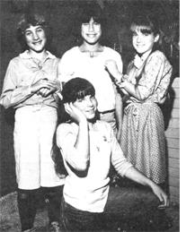
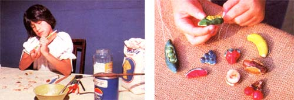
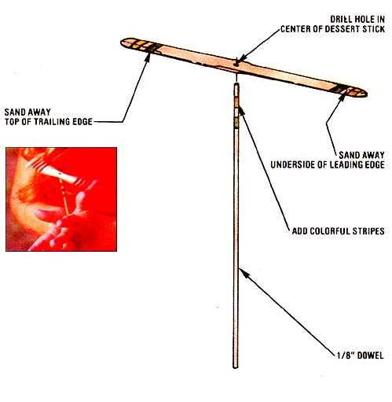

MOTHER feels strongly that youths can be creative "doers'; working toward more ecological and self-reliant lifestyles . . . whether their tasks be raising chickens on a farm or maintaining rooftop container gardens in the city. To support the endeavors of our often overlooked "underage" citizens, we're glad to publish well written articles from younger children and teenagers concerning projects they've undertaken. However, we recommend that all young authors query (that is, send us a letter telling about the story you'd like to do) before writing a full article. Address inquiries to Mother's Children, THE Mother Earth News(restricted), 105 Stoney Mountain Road, Hendersonville,North C arolina 28791.
Hi. My name is Christy, and I'm ten years old. My family lives way up in the hills of Washington State, and I get to see other kids at school every day, but there aren't that many around to play with when I get home. My folks said I had to learn to entertain myself, so sometimes I helped them out with their home business projects (Mom makes porcelain dolls, and Dad makes bread dough Gnome Homes). Still, I was mostly bored.
Then one day when I was watching Dad work on some of his little houses, I got the idea of making food jewelry out of bread dough. I tried it, and the pieces looked great! Dad liked them so much that he said I should try selling some at school. I didn't want to, but when I wore a "corn" necklace to class and my friends saw it, they wanted some of their own. So that's how I got started selling my crafts at school. Now, I make hot dogs, hamburgers, grapes, strawberries, bananas, pears, pods with peas in them, and apples . . . with worms in them! (I even tried making a tiny pizza once, but it looked kind of gross.)
Here's how you make bread dough jewelry:
Take 2 cups of flour, 1 cup of warm water, and 1 cup of salt., and mix them together. Knead the stuff well, and once that's done (your hands will be all gooey), you're ready to shape and color your favorite foods.
With most fruits or vegetables, it's easiest to color the dough before you start shaping it. For strawberries, for instance, you can stretch out a hunk of dough and put red stripes all over it with a broad-tipped felt pen. Then knead away until the whole lump turns pink. Add more red if you need it, make strawberries the size you want, and use a fine felt pen to put dark spots on them afterward. Next, paint three green leaves on their tops.
When you're finished with that, set the pieces out to let the air dry them. (You might want to bake them in a 350 °F oven for a few minutes to give them extra firmness.) Once they're hard, put a coat of varnish on them so they won't get soggy-.
Hamburgers and hot dogs are different. You have to shape them before you color them, let them dry for about an hour, and then "paint" only the meat part. Put them in the oven (or have your mom or dad do it) on the top rack-but not right under the burner-and broil them at 350°F. When you take them out (they'll be done in about 3 to 7 minutes), the buns'll have a nice, toasted look to them. You can finish off hamburger buns by putting little brown spots on their tops for the sesame seeds. They'll look almost good enough to eat!
I'd better warn you about something. When you make bread dough jewelry, don't wear nice clothes, and keep a bowl of water and a rag by you . . . because you're going to get messy! One time my kitten jumped up to see what I was doing and landed right in the water. I was sure glad I had on old clothes then, because all of a sudden there was cat, water, and dough all over!
You can make a piece of food jewelry into a bracelet or necklace by gluing some string on it when it's all dry. Or you can put in a little hole for the string before you dry or broil the dough food. To do this, just gently twist and push a small nail through the piece. My dad also came up with the idea of putting a big paper clip in the back of long fruits like corn or bananas to turn them into hair barrettes . . . and I sell lots of those now! All you have to do is bend one end of the paper clip enough so that you can stick it into the back of a just made food. It'll stay in fine after the food dries.
I sell my jewelry pieces for from 1N to 25C each, depending on how hard they are to make. (My most popular ones are corn and strawberries . . . then come grapes.) And I get a lot of resales. Since boys don't buy too many necklaces or barrettes, I've started making bigger dough burgers and hot dogs and sticking them onto pencils. I poke a pencil through these treats before I bake them. Then after they're done and cool nit tled a little clay jar glue icy hell, them stuck to the pencils. These pieces are bigger than my jewelry, so I sell them for 5 cents more.
I don't make a lot of money with my bread dough jewelry, but I've earned more than $9.00 already. Besides, my friends like them and I enjoy making them. So, if you want to have some fun and earn a bit of money yourself, I think you'll find that this is a good idea.
One thing's for sore, it keeps you from getting bored!
AND NOW... FLY FLYS !
The following came in from Meachelle Osborne, Christy's mother, some time after we received the bread dough j ewelry article.
I know Christy wrote you abort bread dough jewelry, but now she's begun making arid selling something else, as well. After her father saw how to make a little hand helicopter toy in MOTHER, he got some 1/8 "doweling and sticks from ice cream pops and showed Christy how to make a smaller version of the propeller toy. [EDITOR'S NOTE: See "Whittle a Prop-Up!" in issue 68, page 90.] Now, these aircraft--Christy calls them "fly flys"-are beginning to sell every better than the jewelry does . . . and she sells them for 251 apiece! Even one of Christy's teachers asked her how the prop-ups worked so he could have his science class build them. (Christy didn't tell him. She didn't want to give away any trade secrets!)
Here's how she makes one: First, she finds the center of a frozen dessert stick and drills a small hole there. (Actually, to save time, Christy places three sticks at a time on top of each other, holds them tight, and drills all three at one time.) Then she cuts off a six-inch section of dowel by scoring the measured cutting mark with a steak knife until she can snap the piece off.
The real secret to making a fly fly is to bevel the edges of the stick with medium-grade sandpaper to give it a real propeller shape. Christy uses medium-grade sandpaper to rub away some of the underside of each blade half's leading edge and some of the top side of both trailing edges. (Thus, opposite top and bottom edges are beveled.) As Christy says, "f1 lot of the boys at school have tried to make their own fly flys. But even after seeing mine, they don't spot the bevel on the edges. So the ones they make don't fly worth a bean. And I'm not telling them what they're doing wrong!"
All she has to do to assemble the toy is glue one dowel end into the propeller hole . . . and the fly fly is ready to go! However, Christy adds an artistic touch to her toy. She takes some felt-ripped peas and draws stripes on both ends (top and undersides) of the blade. That makes the toy look Derv colorful when it flies.
Christy adds one further refinement to her 351 "competition model" fly flys. After donning gloves, she very carefully (having learned the hard way about getting burned) holds each stick over a steaming teapot spout and twists the blade as the hot vapor hits its center. Done right, this added touch raises the leading edges an extra bit, which makes the fly fly really scoot . . . high and long. (Of course, you make any prop-up soar by spinning the dowel rapidly between your palms . . . in whichever direction causes the toy to rise, not sink!)
Christy's sold about 18 propeller toys so far . . . and has over 100 others on handy Why does she have so many? Well, she and her dad have a scheme. When summer comes, they intend to take fly flys to the beach and start playing with them . . . so that other children will get excited about the toys and buy them. As it isn't exactly summer right now, we don't know if the idea will work or not. But as Christy says, "That's the plan!"
|
A steady hand and an eye for detail are necessary to make this business a success. The results are colorful bits of fun that look good enough to eat! |
 |
 |
|
 |
|
|